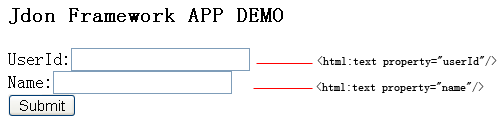
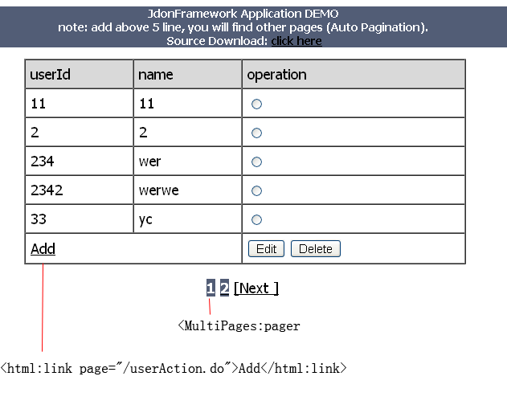
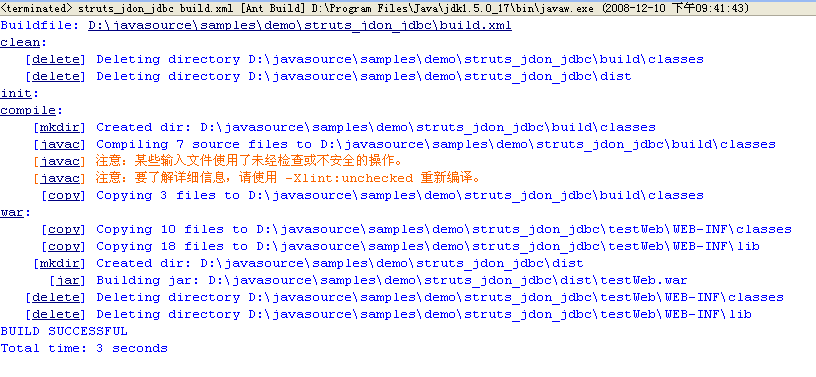
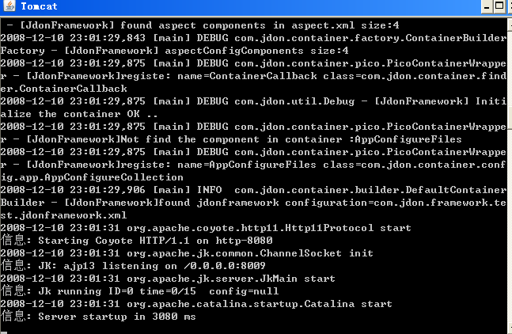

|
Struts Jdon JDBC Application
We use a simple "UserModel" application to show how JdonFramework work in a web application, online demo: http://www.jdon.com/testWeb/. in this sample, we show how to Create/Read/Update/Delete(CRUD) the UserModel, include pageinate the UserModel collection. This sample source is included in JdonFramework source package.
Domain Model
At first, By Evans DDD, we can get a domain Model: UserModel:
@Model
public class UserModel {
private String userId;
private String name;
@Inject
private ComputerRole computerRole;
|
Two: Role. Domain event producer is a Role of DCI，it includes the interactions of DCI.
@Introduce("message")
public class ComputerRole {
@Send("computeCount")
public DomainMessage computeCount(UserModel user) {
return new DomainMessage(user);
}
@Send("saveUser")
public DomainMessage save(UserModel user) {
return new DomainMessage(user);
}
}
|
Three: Context, In Context,The Role will be injected into the data.
public class ComputeContext {
private DomainMessage ageAsyncResult;
public void preloadData(UserModel user) {
if (ageAsyncResult == null)
ageAsyncResult = user.getUserDomainEvents().computeCount(user);
}
public int loadCountNow(UserModel user) {
preloadData(user);
return (Integer) ageAsyncResult.getEventResult();
}
public int loadCountByAsync(UserModel user) {
if (ageAsyncResult == null)
ageAsyncResult = user.getUserDomainEvents().computeCount(user);
else if (ageAsyncResult != null)
return (Integer) ageAsyncResult.getEventResult();
return -1;
}
}
|
above all source in: SimpleJdonFrameworkTest.rar
JSP Web Pages
user.jsp: For CRUD operations, we only create one jsp named user.jsp, in this jsp, by "action" value, we can finish CRUD operations.
user.jsp (include all CRUD in one Jsp):
<html:form action="/userSaveAction.do" method="POST" onsubmit="return checkPost();">
<html:hidden property="action"/>
UserId:<html:text property="userId"/>
<br>
Name:<html:text property="name"/>
<br>
<html:submit property="submit" value="Submit"/>
</html:form>
|

userList.jsp: List all UserModels collection and auto paginate them.
<logic:iterate indexId="i" id="user" name="listForm" property="list" >
<bean:write name="user" property="userId" />
<bean:write name="user" property="name" />
<input type="radio" name="userId" value="<bean:write name="user" property="userId" />">
</logic:iterate>
<html:link page="/userAction.do">Add</html:link>
....
<!-- Auto Pagination taglib of jdon -->
<MultiPages:pager actionFormName="listForm" page="/userListAction.do">
<MultiPages:prev name="[Prev ]" />
<MultiPages:index displayCount="1" />
<MultiPages:next name="[Next ]" />
</MultiPages:pager>
|

Business Service
In Business Layer, we have a interface named TestService, it has CRUD operation about UserModel packed in EventModel, if any errors happened you can pass the error infos into it and display the error infos to JSP Webpages.
public interface TestService {
public void createUser(EventModel em);
public void updateUser(EventModel em);
public void deleteUser(EventModel em);
public UserModel getUser(String userId);
/**
* for batch inquiry
*/
public PageIterator getAllUsers(int start, int count);
/**
* for the command pattern of service invoke
*/
public void xxxxx(EventModel em);
} |
No Controllers: In this sample.there is no any controlles of MVC, no CRUD controller actions of Struts, the JSP directly send commands to TestService, to do these only need jdonframework.xml configuration as below:

Packaging
run Ant's build.xml (you maybe modify the deploy.dir value in build.xml) , after packaging, you get a deploy file testWeb.war under dist directory.

The DataBase
Creating the Database Schema, import database.sql into your database:
use test;
create table testuser (
userId char(20) not null,
name varchar(20) null,
PRIMARY KEY (userId)
);
INSERT INTO testuser VALUES ('1', 'tony');
INSERT INTO testuser VALUES ('2', 'sunny');
INSERT INTO testuser VALUES ('3', 'kevin');
|
Deploying the Application
copy dits/testWeb.war to tomcat's webapps, start tomcat, after see the infos as below, run this appalication in browser: http://127.0.0.1:8080/testWeb/

|